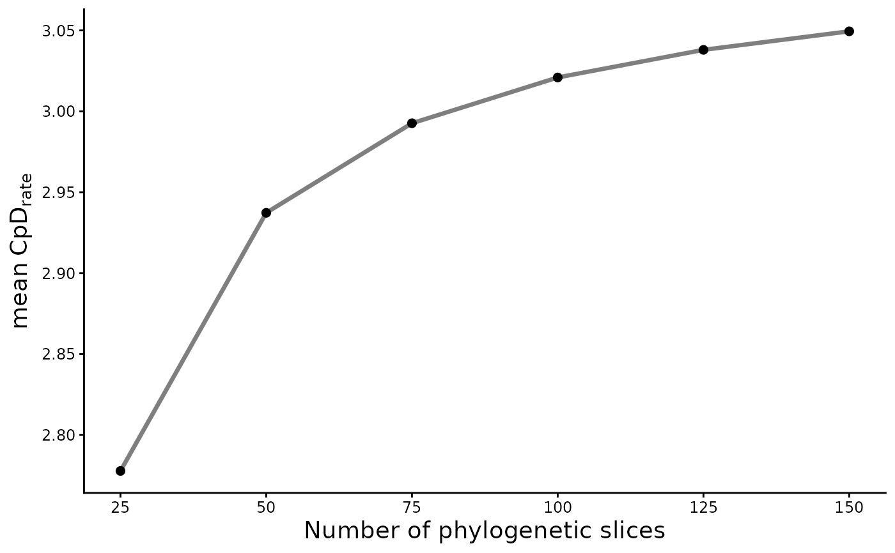

Make a plot of the sensitivity analysis evaluated under cumulative phylogenetic rate functions
Source:R/CpR_sensitivity_plot.R
CpR_sensitivity_plot.RdThis function generates a plot of the sensitivity analysis calculated for a given cumulative phylogenetic rate (CpR) assessed through the CpR_sensitivity() function.
Arguments
- sst_output
data frame. The outputted data frame from the
CpR_sensitivity()function.- rate
character string. The desired phylogenetic index rate to display. It can be filled with "CpD", "CPE", "CpB", or "CpB_RW".
- stc
character string. A statistical measure to summarize the phylogenetic rates and create the plot, which could be filled with "mean", "var", "median", "sd", "min", and "max". Default is "mean".
References
Users can use the CpR_sensitivity_plot() function for plotting sensitivity analysis outputs.
See also
CpR sensitivity analysis: CpR_sensitivity().
Author
Matheus Lima de Araujo matheusaraujolima@live.com
Examples
# Generate a random tree
tree <- ape::rcoal(20)
# Create a presence-absence matrix
mat <- matrix(sample(c(1,0), 20*10, replace = TRUE), ncol = 20, nrow = 10)
colnames(mat) <- tree$tip.label
# Calculate the CpD for 100 tree slices
CpD(tree, n = 100, mat = mat)
#> > The 100 number of pieces inputted equals to intervals of 0.0180875415751787 million of years.
#> CpD PD pDO
#> 1 1.139800 5.597501 2.628296
#> 2 1.092982 5.323702 2.740881
#> 3 1.126685 5.539343 2.658890
#> 4 1.013498 4.914616 2.955833
#> 5 1.175538 5.771475 2.548393
#> 6 1.029199 4.982034 2.910742
#> 7 1.175538 5.771475 2.548393
#> 8 1.098712 5.410340 2.726586
#> 9 1.175538 5.771475 2.548393
#> 10 1.138231 5.587802 2.631921
# Create a vector of number of slices
vec <- c(25, 50, 75, 100, 125, 150)
# Calculate the sensitivity of the CpD
Sens_out <- CpR_sensitivity(tree, vec, mat, rate = "CpD", samp = 5)
#> Warning: Removing the species in presence abscence matrix without any occurrence
#> Warning: Removing tips from phylogeny that are absent on species matrix
#> > The 25 number of pieces inputted equals to intervals of 0.0723501663007148 million of years.
#> Warning: Removing the species in presence abscence matrix without any occurrence
#> Warning: Removing tips from phylogeny that are absent on species matrix
#> > The 50 number of pieces inputted equals to intervals of 0.0361750831503574 million of years.
#> Warning: Removing the species in presence abscence matrix without any occurrence
#> Warning: Removing tips from phylogeny that are absent on species matrix
#> > The 75 number of pieces inputted equals to intervals of 0.0241167221002383 million of years.
#> Warning: Removing the species in presence abscence matrix without any occurrence
#> Warning: Removing tips from phylogeny that are absent on species matrix
#> > The 100 number of pieces inputted equals to intervals of 0.0180875415751787 million of years.
#> Warning: Removing the species in presence abscence matrix without any occurrence
#> Warning: Removing tips from phylogeny that are absent on species matrix
#> > The 125 number of pieces inputted equals to intervals of 0.014470033260143 million of years.
#> Warning: Removing the species in presence abscence matrix without any occurrence
#> Warning: Removing tips from phylogeny that are absent on species matrix
#> > The 150 number of pieces inputted equals to intervals of 0.0120583610501191 million of years.
# Plot the sensitity analysis
CpR_sensitivity_plot(Sens_out, rate = "CpD", stc = "mean")
